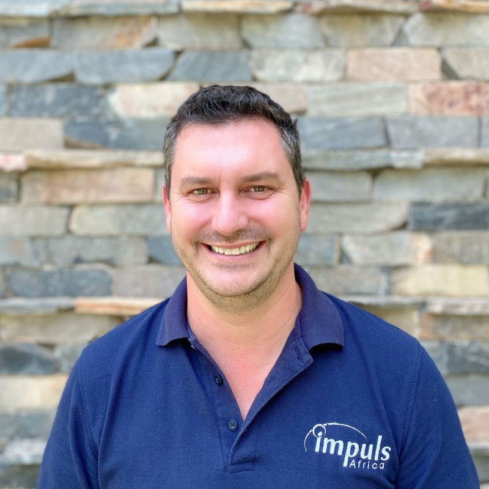
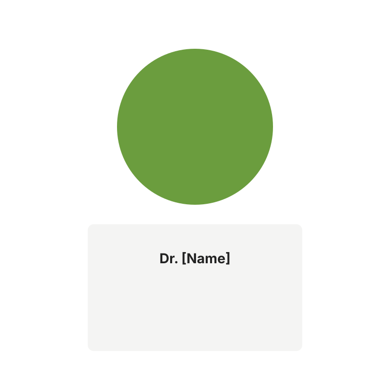

Pro Green Earth is a Zambian organisation set up to implement the Barotse Rangelands for Restoration Project. We combine deep local knowledge, scientific rigour and long-term partnerships to restore landscapes and improve livelihoods.
Chairman — Highly-experienced business leader with 30+ years of mixed farming experience in Zambia. Founder and former CEO of Zambeef Products PLC.

Founder & Director — Agribusiness and program strategy. 13+ years of agricultural consulting experience; projects have impacted over 8000 smallholder farmers.
Chief Technical Officer — 10+ years facilitating nature-based solutions and climate finance; experience verifying AFOLU emissions reductions.

Government Liaison & Director for Health and Safety — Decades of public and private sector experience; Fellow of the Zambian Institute for Environmental Health.